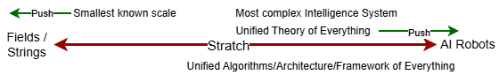

This assignment focuses on creating a machine learning model to classify COVID-19 lung X-ray images stored in Google Drive. Our objective is to perform binary classification of COVID-19 lung images from Kaggle datasets.
Mount drive
# Mount drive
from google.colab import drive
drive.mount('/drive')
Dataset Description
Here, we are going to use the raw COVID-19 Patients Lungs X Ray Images 10000 data from Kaggle.
License Data files © Original Authors
Citation:
@Kaggle,
url = {https://www.kaggle.com/nabeelsajid917/covid-19-x-ray-10000-images?select=dataset}
}
Load raw (provided) Dataset
Here we have provided dataset:
Corona positive: 70
Corona negative: 28
Data Augumentation
We have provided 70 positive images and 28 negatives. If we apply CNN we need lots of data set so, we need data augmentation to increase the training sample. Augmentation is the process of increasing training samples by flipping, color modification, cropping, rotation, noise injection, and random erasing.
from keras.preprocessing.image import ImageDataGenerator
from keras.preprocessing.image import img_to_array
from imutils import paths
import numpy as np
import cv2
import os
def data_augumentation(input_path, output_path):
'''
Augument the give data.
## Parameters:
input_path (str) : input files path
output_path (str) : output files path
'''
imagePaths = list(paths.list_images(input_path))
data = []
for imagePath in imagePaths:
label = imagePath.split(os.path.sep)[-2]
image = cv2.imread(imagePath)
data.append(image)
for image in data:
print("[INFO] loading example image...")
image = img_to_array(image)
image = np.expand_dims(image, axis = 0)
aug = ImageDataGenerator(
rotation_range = 30,
zoom_range = 0.15,
width_shift_range = 0.2,
height_shift_range = 0.2,
shear_range = 0.15,
horizontal_flip = True,
fill_mode = "nearest")
total = 0
print("[INFO] generating images...")
imageGen = aug.flow(
image,
batch_size = 1,
save_to_dir = output_path,
save_prefix = "image",
save_format = "jpg")
for image in imageGen:
total += 1
if total == 5:
break
Covid positive and negative data augmentation:
Paths = [("/drive/My Drive/covid/raw/covid",
"/drive/My Drive/covid/processed/covid"),
("/drive/My Drive/covid/raw/normal",
"/drive/My Drive/covid/processed/normal")]
for i in Paths:
data_augumentation(i[0],i[1])
Augmented data and save it into the processed folder.
Load augumented (processed) Datasets
Here after augumentation we had saved augumented dataset into the processed folder. Load augumented (processed) dataset.
def get_data(input_path):
'''
Get data from given path.
## Parameters:
input_path (str) : input files path
## Returns
data (array) : image array
labels (array) : label array
'''
imagePaths = list(paths.list_images(input_path))
data = []
labels = []
for imagePath in imagePaths:
label = imagePath.split(os.path.sep)[-2]
image = cv2.imread(imagePath)
image = cv2.cvtColor(image, cv2.COLOR_BGR2RGB)
image = cv2.resize(image, (128, 128))
data.append(image)
labels.append(label)
return data,labels
Data preprocessing
In this section, you will complete a data_preprocessing function to clean the data and labels.
- Normalize all data dividing by 255.0 (convert image into binary image).
- Binarize the label using
LabelBinarizer(). - Convert binarized labels into categorical vectors.
from tensorflow.keras.utils import to_categorical
from sklearn.preprocessing import LabelBinarizer
def data_preprocessing(data,labels):
'''
Preprocess the given data.
## Parameters:
data (array) : input image dataset
labels (array) : array of labels
## Returns
data (array) : processed array of images
labels (array) : processd array of labels
'''
data = np.array(data) / 255.0
labels = np.array(labels)
lb = LabelBinarizer()
labels = lb.fit_transform(labels)
labels = to_categorical(labels)
return data,labels,lb
Train-Test split
We use sklearn train_test_split function to split data into train and test.
from sklearn.model_selection import train_test_split
def data_split(data,labels):
(trainX, testX, trainY, testY) = train_test_split(
data,
labels,
test_size=0.20,
stratify=labels,
random_state=42
)
return (trainX, testX, trainY, testY)
input_path = "/drive/My Drive/covid/processed"
data,labels = get_data(input_path)
data,labels,lb = data_preprocessing(data,labels)
(trainX, testX, trainY, testY) = data_split(data,labels)
Create models
VGG16
from tensorflow.keras.applications import VGG16
from tensorflow.keras.layers import AveragePooling2D
from tensorflow.keras.layers import Dropout
from tensorflow.keras.layers import Flatten
from tensorflow.keras.layers import Dense
from tensorflow.keras.layers import Input
from tensorflow.keras.models import Model
from tensorflow.keras.optimizers import Adam
class Model_VGG16:
def __init__(self,int_lr,epochs,bs):
self.int_lr = int_lr # learning rate
self.epochs = epochs
self.bs = bs
baseModel = VGG16(weights="imagenet", include_top=False,
input_tensor=Input(shape=(128, 128, 3)))
headModel = baseModel.output
headModel = AveragePooling2D(pool_size=(4, 4))(headModel)
headModel = Flatten(name="flatten")(headModel)
headModel = Dense(64, activation="relu")(headModel)
headModel = Dropout(0.5)(headModel)
headModel = Dense(2, activation="softmax")(headModel)
self.model = Model(inputs=baseModel.input, outputs=headModel)
for layer in baseModel.layers:
layer.trainable = False
print("[INFO] compiling model...")
opt = Adam(lr=self.int_lr, decay=self.int_lr / self.epochs)
self.model.compile(loss="binary_crossentropy", optimizer=opt,
metrics=["accuracy"])
def fit(self,trainX, trainY,testX,testY):
trainAug = ImageDataGenerator(
rotation_range=15,
fill_mode="nearest")
print("[INFO] training head...")
History = self.model.fit_generator(
trainAug.flow(trainX, trainY, batch_size=self.bs),
steps_per_epoch=len(trainX) // self.bs,
validation_data = (testX, testY),
validation_steps=len(testX) // self.bs,
epochs=self.epochs)
return History
def predict(self,testX):
return self.model.predict(testX, batch_size=self.bs)
def save_model(self):
print("[INFO] saving COVID-19 detector model...")
self.model.save("model.h5")
Model evaluation
from sklearn.metrics import classification_report
from sklearn.metrics import confusion_matrix
import matplotlib.pyplot as plt
def model_evaluation(History, predIdxs, lb,testX,testY):
print("[INFO] evaluating network...")
predIdxs = np.argmax(predIdxs, axis=1)
print(classification_report(testY.argmax(axis=1), predIdxs,
target_names=lb.classes_))
cm = confusion_matrix(testY.argmax(axis=1), predIdxs)
total = sum(sum(cm))
acc = (cm[0, 0] + cm[1, 1]) / total
sensitivity = cm[0, 0] / (cm[0, 0] + cm[0, 1])
specificity = cm[1, 1] / (cm[1, 0] + cm[1, 1])
print(cm)
print("acc: {:.4f}".format(acc))
print("sensitivity: {:.4f}".format(sensitivity))
print("specificity: {:.4f}".format(specificity))
# plot the training loss and accuracy
N = EPOCHS
plt.style.use("ggplot")
plt.figure()
plt.plot(np.arange(0, N), History.history["loss"], label="train_loss")
# plt.plot(np.arange(0, N), History.history["val_loss"], label="val_loss")
plt.plot(np.arange(0, N), History.history["accuracy"], label="train_acc")
# plt.plot(np.arange(0, N), History.history["val_accuracy"], label="val_acc")
plt.title("Training Loss and Accuracy on COVID-19 Dataset")
plt.xlabel("Epoch #")
plt.ylabel("Loss/Accuracy")
plt.legend(loc="lower left")
ML pipeline
INIT_LR = 1e-3
EPOCHS = 100
BS = 128
model_vgg16 = Model_VGG16(INIT_LR,EPOCHS,BS)
History = model_vgg16.fit(trainX, trainY,testX,testY)
predIdxs = model_vgg16.predict(testX)
#print(History.history.keys())
model_evaluation(History, predIdxs, lb,testX,testY)